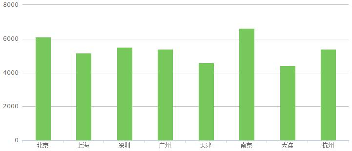
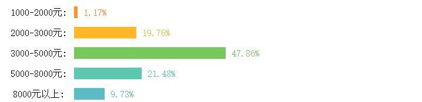
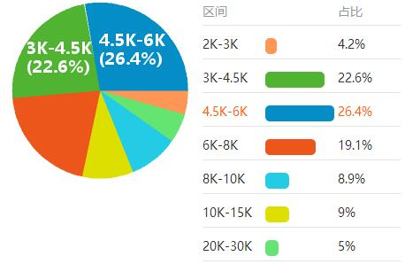

心理咨询师-热门城市工资
对于一份诞生于本世纪初的专属职业来说，心理咨询师在我国出现才短短若干年，“长期以来，关于心理学的教育仅仅存在于师范类院校。”广东省心理咨询专业委员会副主任委员、高级心理治疗师袁荣亲告诉羊城晚报记者，之前由于温饱问题没有解决，人们对精神层面的需求还没有凸显，而如今，社会对这一职业的需求，正面临大规模的井喷。
据不完全统计，美国1000人中就有一个心理咨询师，许多家庭还有自己的私人心理医生，有30%的人定期看心理医生，80%的人会不定期去心理诊所。而在我国，大约1600万人有着各种精神和心理障碍的患者，1.5亿青少年中受到情绪和压力困扰的就有3000万人。但是，在心理咨询机构从事专业心理咨询和治疗的专职人员大约只有十几万。
在收入方面，心理咨询收费从每小时100元至1000元不等，平均收费200元/小时。在北京、上海等一线城市，价格则会更高
除了个人客户，心理咨询机构也承接团体客户，据透露，曾有一家国企以一年400万元的价格购买专业的心理咨询服务，用以缓解职工的工作压力和情绪管理。就拿不久前富士康遭遇的事例来说，如果企业事先在情绪和压力管理上有所付出，就不会发生如此多的悲剧。
据不完全统计，美国1000人中就有一个心理咨询师，许多家庭还有自己的私人心理医生，有30%的人定期看心理医生，80%的人会不定期去心理诊所。而在我国，大约1600万人有着各种精神和心理障碍的患者，1.5亿青少年中受到情绪和压力困扰的就有3000万人。但是，在心理咨询机构从事专业心理咨询和治疗的专职人员大约只有十几万。
在收入方面，心理咨询收费从每小时100元至1000元不等，平均收费200元/小时。在北京、上海等一线城市，价格则会更高
除了个人客户，心理咨询机构也承接团体客户，据透露，曾有一家国企以一年400万元的价格购买专业的心理咨询服务，用以缓解职工的工作压力和情绪管理。就拿不久前富士康遭遇的事例来说，如果企业事先在情绪和压力管理上有所付出，就不会发生如此多的悲剧。


心理咨询师工资分布情况
心理咨询师陈文峰介绍，心理咨询师在国内的收入情况比较复杂，在不同类型的机构和服务中差异较大。
从事矫治性心理咨询的人针对的是有心理障碍或者病理性的人格特点的“病人”，例如强迫症、抑郁症、焦虑症、人格障碍等。目前广州入门级咨询师的咨询费为每小时200元~300元，表面上不少，其实要和咨询机构分成，如果机构名气不大、客源不多的话，最后每月拿到的可能不及普通白领。从业经验丰富的、名气比较大的，以及各咨询中心的“头牌”咨询师一般能拿到6000元到1.5万元左右。有些“天价”咨询师需要推广个人品牌，实际收入也就相当于企业的中层经理水平，没准会是年薪10万元。还有的咨询师经常开为期数天的心理学课程，每个学生收好几千元，收入也很丰厚
很多人进入心理咨询领域之前以为很赚钱，结果花掉几十万元参与各种课程培训，最后不能收回投资。更有部分人是因为有心理问题而想成为心理咨询师，他们当上心理咨询师会“害人”吗？陈文峰认为可能性不大，因为他们成长不充分，心理功能不稳定，很难忍受咨询行业中的不确定性，一上岗就焦虑得坚持不下去，最后顶多在机构里打杂。
具有使命感的心理咨询师会不太看重经济收入，希望减轻社会大众的心理成本，在助人时实现自己的人生意义。例如，广州有一位咨询师原来是高级教师，月入上万元，改行做心理咨询师后收入大幅减少而且极不稳定，依然无怨无悔地从低做起。
从事矫治性心理咨询的人针对的是有心理障碍或者病理性的人格特点的“病人”，例如强迫症、抑郁症、焦虑症、人格障碍等。目前广州入门级咨询师的咨询费为每小时200元~300元，表面上不少，其实要和咨询机构分成，如果机构名气不大、客源不多的话，最后每月拿到的可能不及普通白领。从业经验丰富的、名气比较大的，以及各咨询中心的“头牌”咨询师一般能拿到6000元到1.5万元左右。有些“天价”咨询师需要推广个人品牌，实际收入也就相当于企业的中层经理水平，没准会是年薪10万元。还有的咨询师经常开为期数天的心理学课程，每个学生收好几千元，收入也很丰厚
很多人进入心理咨询领域之前以为很赚钱，结果花掉几十万元参与各种课程培训，最后不能收回投资。更有部分人是因为有心理问题而想成为心理咨询师，他们当上心理咨询师会“害人”吗？陈文峰认为可能性不大，因为他们成长不充分，心理功能不稳定，很难忍受咨询行业中的不确定性，一上岗就焦虑得坚持不下去，最后顶多在机构里打杂。
具有使命感的心理咨询师会不太看重经济收入，希望减轻社会大众的心理成本，在助人时实现自己的人生意义。例如，广州有一位咨询师原来是高级教师，月入上万元，改行做心理咨询师后收入大幅减少而且极不稳定，依然无怨无悔地从低做起。
在美国，心理咨询师每个小时的收入可以达到150美元左右。在国内，心理咨询收费从每小时100元至1000元不等，平均收费200元/小时。我国的心理咨询远远跟不上发达国家的水平，专业的分支及待遇也远不能及。